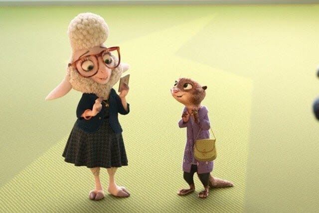
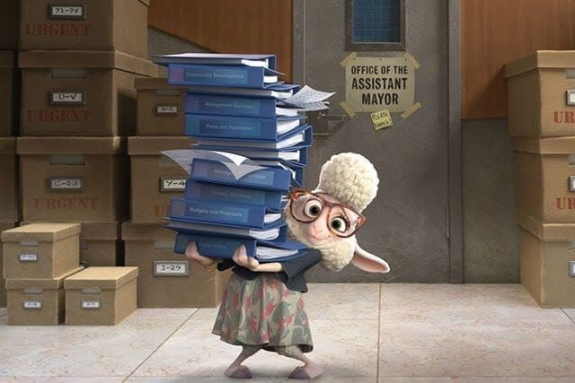

5 причин посмотреть зверополис
1. Идеальный сценарий
Сложно вспомнить фильм, а уж тем более мультфильм, который писали вдесятером, – на «Зверополис» потратили время несколько сценаристов других мультфильмов и детского кино, и история в итоге отполирована до блеска.
2. Продуманные мелочи
В каждой комедии (а «Зверополис», безусловно, комедия) важно, чтобы все брошенные в поле шутки взошли через полчаса, а крошечные подробности срослись в законченной истории. В этом мультфильме на местах все.
3. Отличные персонажи
Мисс Барашкис с войлочной укладкой. Певица Газелль в пайетках устраивает супершоу. Мистер Выдриксон, примерный семьянин. Мэр Зверополиса с улыбкой Барака Обамы. Главная героиня с фиолетовыми глазами-блюдцами. Жирафы, покупающие смузи через специальный лифт. Носороги в полицейской форме. Крысы в поисках леопардовых принтов. Да, герои мультфильмов чаще всего антропоморфные и именно этим подкупают зрителей, но нарисовать антилопу, в которой узнаешь взгляд лучшей подружки, и слона, похожего на охранника кинотеатра, куда ты пришел посмотреть мультфильм, под силам только самым талантливым, настойчивым и основательным. Disney со времен «Корпорации монстров» не удавалось так равномерно и разнообразно населить мир, из которого к людям выбираться совсем не хочется.
4. Лучшие моменты из истории кино
Как любое новое зрелище, «Зверополис» обильно цитирует, но делает это изящно, по делу и действительно смешно. Я видела много пародий на «Крестного отца» в кино и скетчах, но именно авторы этого мультфильма не ленятся и досконально прорисовывают дом мафиози и его кабинет в темных тонах на секундном кадре. Именно тут шутка про свадьбу дочери выглядит невероятно уместной. И все шутки про напарников из полицейского кино тоже на месте: один слишком любит правду и торопится раскрыть все преступления разом, другой стебет его при каждом удобном случае.
5. Политическая поэзия
Это один из самых важных и своевременных мультфильмов о том, как жить вместе в плавильном котле, где у всех разные пятачки, копыта, уши и рога. Конечно, «Зверополис» – это Нью-Йорк в зверином обличье, и авторы фильма рассказывают о том, как жить в одном пространстве, не перегрызая друг другу глотку. Карамельная политкорректность – то, чего фильм удачно избегает. Здесь есть десяток остроумных зарисовок о лисе, которого не берут в полицию, потому что все держат его за плута. Или о растолстевшем гепарде, который вынужден переехать с ресепшена министерства внутренних дел в подвал после того, как по телевизору объявили о подавленной склонности хищников нападать без причины.
